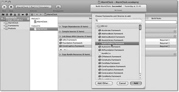

Zum Online-Shop
Zum Online-Shop
3.3 Lokale Benachrichtigungen
Dem Wecker fehlt jetzt nur noch ein Alarmton, der zur gewählten Zeit erklingt. Sie können natürlich die Zeitdifferenz zum aktuellen Zeitpunkt berechnen und einen Timer starten. Dieser ruft nach Ablauf der Zeit eine Methode auf, die einen Ton abspielt. Das funktioniert aber nur, wenn Ihr Programm die ganze Zeit im Vordergrund weiterläuft. Sie können also Ihr iPhone in der Zwischenzeit nur eingeschränkt nutzen.
Das Beispielprogramm verwendet stattdessen lokale Benachrichtigungen, die Apple mit iOS 4.0 eingeführt hat. Das sind zeitgesteuerte Ereignisse, die durch das Betriebssystem zu einem bestimmten Zeitpunkt ausgelöst werden. Eine lokale Benachrichtigung kann beim Auslösen eine Alertbox auf dem Bildschirm anzeigen, eine Audiodatei abspielen oder die Badgenummer auf einen festen Wert setzen. Badgenummern sind die Zahlen in einem roten Kreis am App-Icon, die viele Apps (z. B. Mail) verwenden. Lokale Benachrichtigungen funktionieren auch, wenn Sie Ihre App in den Hintergrund schicken oder sogar stoppen. Die Nachricht erscheint aber nicht, wenn die App im Vordergrund läuft. Stattdessen wird eine Methode im Application-Delegate aufgerufen.
Abbildung 3.27 Anzeige einer lokalen Benachrichtigung
Sie definieren eine neue Benachrichtigung, indem Sie ein Objekt der Klasse UILocalNotification erzeugen und den Auslösezeitpunkt setzen. Außerdem müssen Sie einen Nachrichtentitel und -text angeben, wenn Sie eine Alertbox anzeigen lassen wollen. Für den Benachrichtigungston und die Badgenummer sind ebenfalls entsprechende Methoden vorhanden. Die neue Benachrichtigung wird dann in die Verarbeitungswarteschlange eingefügt. Sie können auf diese Warteschlange über das Singleton UIApplication zugreifen.
3.3.1 Benachrichtigungen versenden ...
Die Methode scheduleLocalNotification: fügt eine Benachrichtigung in die Warteschlange ein, und cancelLocalNotification: entfernt sie wieder daraus. Die Methode cancelAllLocalNotifications entfernt alle Benachrichtigungen der App aus der Warteschlange. Über die Property scheduledLocalNotifications können Sie alle Benachrichtigungen aus der Warteschlange auslesen und ab iOS 4.2 auch setzen. Sie können in der Warteschlange aber nur auf die Benachrichtigungen Ihrer App zugreifen. Der Zugriff auf die Benachrichtigungen anderer Apps ist nicht möglich.
Die Methode createAlarm in der Klasse AlarmClockViewController erzeugt eine neue Benachrichtigung:
- (void)createAlarm {
UIApplication *theApplication =
[UIApplication sharedApplication];
UILocalNotification *theNotification =
[[UILocalNotification alloc] init];
NSTimeInterval theTime = self.startTimeOfCurrentDay + clockControl.time;
while(theTime < [NSDate timeIntervalSinceReferenceDate]) {
theTime += kSecondsOfDay / 2.0;
}
[theApplication cancelAllLocalNotifications];
theNotification.fireDate =
[NSDate dateWithTimeIntervalSince ReferenceDate:theTime];
theNotification.timeZone = [NSTimeZone defaultTimeZone];
theNotification.alertBody = @"Aufwachen";
theNotification.soundName = UILocalNotificationDefaultSoundName;
[theApplication scheduleLocalNotification:theNotification];
[theNotification release];
}
Listing 3.38 Erzeugung einer lokalen Benachrichtigung
Zuerst muss die Methode die Alarmzeit in ein NSDate-Objekt umwandeln. Die Alarmzeit liegt als relative Zeit zum Beginn des aktuellen Tages oder der letzten Mittagszeit vor, da das Ziffernblatt nur 12 und nicht 24 Stunden umfasst. Die Berechnung erfolgt nun so, dass zu der Startzeit des Tages die Alarmzeit hinzugerechnet wird. Solange diese Zeit noch kleiner als die aktuelle Zeit ist, werden jeweils die Sekunden eines halben Tages hinzugezählt. Für die Berechnung wurde eine Konstante kSecondsOfDay mit der Anzahl der Sekunden eines Tages definiert. Bevor aber die neue Alarmzeit gesetzt wird, müssen Sie die eventuell vorhandenen Benachrichtigungen aus der Warteschlange löschen. Als Alarmton wird der Systemton für Benachrichtigungen verwendet.
Die Methode startTimeOfCurrentDay berechnet den Startzeitpunkt des Tages zu der aktuellen Uhrzeit. Dazu verwenden Sie einen Kalender, mit dem Sie das aktuelle Datum ohne Uhrzeit in einem NSDateComponents-Objekt berechnen lassen. Da alle Zeitkomponenten auf 0 stehen, hat dieses Objekt die Uhrzeit 0:00 Uhr. Sie brauchen es also nur über den Kalender wieder in ein NSDate-Objekt zurückrechnen lassen:
- (NSTimeInterval)startTimeOfCurrentDay {
NSCalendar *theCalendar = [NSCalendar currentCalendar];
NSDateComponents *theComponents =
[theCalendar components:NSYearCalendarUnit |
NSMonthCalendarUnit |
NSDayCalendarUnit
fromDate:[NSDate date]];
NSDate *theDate =
[theCalendar dateFromComponents:theComponents];
return [theDate timeIntervalSinceReferenceDate];
}
Listing 3.39 Berechnung des Startzeitpunktes des aktuellen Tages
Damit haben Sie den Versand einer lokalen Benachrichtigung abgeschlossen. Denken Sie beim Ausprobieren der App aber daran, dass sie die Benachrichtigungen nicht anzeigt, wenn die App im Vordergrund läuft. Sie sollten die App also vor der Versendung über den Home-Button des Simulators in den Hintergrund schicken oder sie über Xcode stoppen.
3.3.2 ... und verarbeiten
Durch eine lokale Benachrichtigung können Sie folgende Ereignisse auslösen. Sie können
- eine Nachricht anzeigen lassen,
- einen Klang mit einer maximalen Länge von 30 Sekunden abspielen und
- die Markierungszahl (die Badgenummer) am Icon der Applikation im Springboard auf einen festen Wert setzen.
Die lokale Benachrichtigung kann aber leider nicht Ihre Applikation automatisch in den Vordergrund bringen. Entweder ist sie bereits im Vordergrund, oder es erscheint die Alertbox, wenn Sie einen Nachrichtentext angeben. Ohne Nachrichtentext zeigt sie auch keine Alertbox an, sondern löst nur die anderen Ereignisse aus. Um die App zu aktivieren, muss der Nutzer den rechten Button Anzeigen in der Alertbox betätigen.
Wenn die App im Vordergrund läuft, informiert Cocoa Touch Sie direkt über das Auftreten einer lokalen Benachrichtigung. Das geschieht über die Methode application:didReceiveLocalNotification: im Application-Delegate. Das Betriebssystem ruft diese Methode auch auf, wenn die App nicht oder im Hintergrund lief und der Nutzer den Anzeige-Button gedrückt hat. Sie können also diese Methode nutzen, um auch dann eine Nachricht anzuzeigen, wenn die App bereits aktiv ist. Mit dieser Methode können Sie die Benachrichtigung manuell verarbeiten. Das Beispielprogramm soll auch eine Alertbox anzeigen und einen Ton abspielen.
Allerdings sollten Sie die Alertbox auch nur dann anzeigen, wenn die App bereits aktiv war. Sie können diese Unterscheidung über die Property applicationState des Singletons UIApplication machen. Die Nachricht zeigen Sie über eine Alertbox an. Dazu verwenden Sie die Klasse UIAlertView.
- (void)application:(UIApplication *)inApplication
didReceiveLocalNotification:
(UILocalNotification *)inNotification {
if(inApplication.applicationState ==
UIApplicationStateActive) {
UIAlertView *theAlert =
[[UIAlertView alloc] initWithTitle:nil
message:inNotification.alertBody
delegate:nil cancelButtonTitle:@"OK"
otherButtonTitles:nil];
[theAlert show];
[theAlert release];
}
}
Listing 3.40 Anzeige einer Alertbox beim Empfang einer Benachrichtigung
Sie können den Systemton für lokale Benachrichtigungen leider nicht selbst in Ihrem Programm abspielen. Es gibt dafür keine Funktion, die genau diesen Klang ertönen lässt. Die Applikation soll stattdessen einen anderen Ton abspielen. Das Klingeln eines mechanischen Weckers passt hier sehr gut.
Wenn Sie eigene Töne für eine lokale Benachrichtigung verwenden wollen, müssen diese laut Dokumentation als 16-Bit-Little-Endian-PCM-Audiodaten vorliegen. Die Länge des Tons darf nicht größer als 30 Sekunden sein, und die Datei sollte im Core-Audio-Format mit der Endung .caf vorliegen. Unter Mac OS X gibt es das Kommandozeilenprogramm afconvert, mit dem Sie eine Audiodatei in dieses Format konvertieren können. Der Aufruf dafür ist:
/usr/bin/afconvert –f caff –d LEI16 {Eingabedatei} {Ausgabedatei}Der Parameter {Eingabedatei} ist die Datei mit dem Ton im Ursprungsformat, und das Programm schreibt den konvertierten Klang in die Datei {Ausgabedatei}. Liegt der Klingelton für den analogen Wecker beispielsweise als WAV-Datei vor, können Sie ihn mit
/usr/bin/afconvert -f caff -d LEI16 ringtone.wav ringtone.caf
in eine CAF-Datei konvertieren.
Bevor Sie den Klang verwenden können, müssen Sie diesen als Ressource zu Ihrem Projekt hinzufügen. Dazu ziehen Sie einfach die gewünschte Datei auf die Gruppe Supporting Files in der Navigatorspalte des Projekts. Sie sollten im folgenden Dialog darauf achten, dass Xcode die Datei auch in das Projekt kopiert. Setzen Sie dazu das Häckchen in der Checkbox Destination. Sie können anschließend den Systemton bei der Erzeugung der lokalen Benachrichtigung durch die Sounddatei ersetzen, indem Sie den Dateinamen ohne Pfadangabe verwenden.
Im Gegensatz zu einem Systemton können Sie diesen Klang auch über Funktionen aus der Audio-Toolbox abspielen. Dazu müssen Sie allerdings dieses Framework einbinden. Wählen Sie dazu zunächst das Target der App aus. Ein Xcode-Projekt kann mehrere Produkte (zum Beispiel Apps oder Frameworks) verwalten. Jedes Produkt hat dabei sein eigenes Target. Es legt die Dateien und Regeln zur Erstellung des jeweiligen Produkts fest. Sie erreichen das Target, wenn Sie in der linken Navigationsspalte das Projekt auswählen. Daneben erscheint eine Spalte mit dem Abschnitt Targets. Wählen Sie dort das Target AlarmClock aus (siehe Abbildung 3.28, links).
Im Hauptfenster befindet sich dann ein Tabulator Build Phases mit dem Abschnitt Link Binary With Libraries. Öffnen Sie diesen Punkt durch einen Klick auf das entsprechende Dreieck. Sie können dem Target über das Plus-Zeichen neue Frameworks hinzufügen. Selektieren Sie im Dialog den Eintrag AudioToolbox.framework, und klicken Sie auf den Button Add.
Abbildung 3.28 So fügen Sie ein Framework zu einem Target hinzu.
Wenn Sie ein Framework einbinden, fügt Xcode sowohl die Binärdateien mit den entsprechenden Klassen, Methoden und Funktionen als auch die entsprechenden Suchpfade für Headerdateien mit den Deklarationen zum Projekt hinzu. Dabei liegen die Headerdateien immer unterhalb eines virtuellen Ordners mit dem Namen des Frameworks.
In der Regel hat jedes Framework von Apple eine Headerdatei mit dem Namen des Frameworks. Über diese Datei können Sie alle Header des Frameworks auf einmal einbinden. Da Sie die Audio-Toolbox im Application-Delegate verwenden möchten, müssen Sie also dort den Header dieses Frameworks über die Direktive
#import <AudioToolbox/AudioToolbox.h>
einbinden.
Das Abspielen des Tons erfolgt in zwei Schritten. Zuerst muss ihn die App aus der Datei laden. Sie erhalten dabei einen Verweis auf den Ton, mit dem Sie ihn beliebig oft abspielen können. Wenn Sie ihn nicht mehr benötigen, sollten sie den Ton über diesen Verweis wieder freigeben.
Der Verweis auf den Ton ist eine vorzeichenlose Zahl, die das Application-Delegate über die Property soundId verwaltet. Das Delegate soll den Ton aber nur einmal laden, und das nur dann, wenn es ihn braucht. Dies erfolgt in dem Lazy-Getter soundId. Diese Methode prüft zuerst, ob sie den Ton bereits geladen hat, und macht dies gegebenenfalls.
| Lazy-Getter |
|
Lazy-Getter sind eine einfache und effektive Möglichkeit für den sparsamen Umgang mit Ressourcen. Sie haben bereits ein weiteres Beispiel dafür kennengelernt. Die Property view der Klasse UIViewController lädt den View erst, wenn das Programm das erste Mal darauf zugreift. Das ist in der Regel kurz vor dessen Anzeige. Lazy-Getter haben meist den gleichen, einfachen Aufbau: - (MyClass *)myObject { |
Die Methode playSound spielt den Ton ab:
- (NSNumber *)soundId {
if(soundId == nil) {
NSURL *theURL =
[[NSBundle mainBundle] URLForResource:@"ringtone"
withExtension:@"caf"];
SystemSoundID theId;
if(AudioServicesCreateSystemSoundID(
(CFURLRef) theURL, &theId) ==
kAudioServicesNoError) {
self.soundId =
[NSNumber numberWithUnsignedInt:theId];
}
}
return soundId;
}
- (void)playSound {
NSNumber *theId = self.soundId;
if(theId) {
AudioServicesPlaySystemSound(
[theId unsignedIntValue]);
}
}
Listing 3.41 Laden und Abspielen eines Tons
Listing 3.41 verwendet für die Property soundId anstatt des Typs NSUInteger die Klasse NSNumber. Das hat den Vorteil, dass Sie als Propertywert nil den Zustand des nicht geladenen Tons abbilden können. In der Methode dealloc müssen Sie den Ton auch wieder freigeben, damit kein Speicherleck entsteht. Das können Sie durch den folgenden Setter erreichen:
- (void)setSoundId:(NSNumber *)inSoundId {
if(soundId != inSoundId) {
if(soundId != nil) {
AudioServicesDisposeSystemSoundID(
[soundId unsignedIntValue]);
[soundId release];
}
soundId = [inSoundId retain];
}
}
Listing 3.42 Freigabe des Alarmtons im Setter
Hier erfolgt der lesende Zugriff auf den Wert auch über das Attribut und nicht über den Getter. Der wäre hier kontraproduktiv, da er ja den Ton lädt, falls er noch nicht geladen wurde. Diese Implementierung stellt sicher, dass das Delegate den alten Alarmton immer freigibt, wenn Sie einen neuen über den Setter setzen.
Das Application-Delegate kann über die Methode applicationDidReceiveMemoryWarning: auch auf Speicherwarnungen reagieren. Da es den Alarmton jederzeit wieder laden kann, sollten Sie in dieser Methode den Propertywert für soundId auf nil setzen.
Ihr Kommentar
Wie hat Ihnen das <openbook> gefallen? Wir freuen uns immer über Ihre freundlichen und kritischen Rückmeldungen.


{kind=link}
{kind=link}